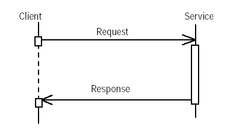
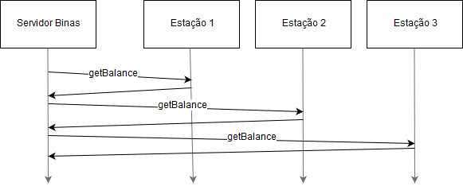
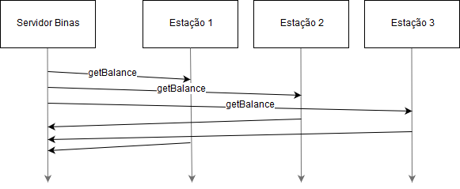

Limite de tempo

O exemplo abaixo demonstra como configurar os tempos de espera pelas respostas de Web Services. No fim do tempo, caso a resposta não tenha sido recebida, é lançada uma exceção.
O JAX-WS distingue dois timeouts distintos:
- connection - quando tempo deve esperar até se estabelecer uma ligação com o servidor;
- receive - quando tempo deve esperar até receber a resposta a um pedido feito ao servidor.
Exemplo:
-
Cliente de Web Service com timeouts

- Para verificar o comportamento do timeout do cliente, pode experimentar este servidor que introduz um atraso artificial na execução das suas operações.
Operações unidireccionais
As operações unidireccionais de Web Service são aquelas que não enviam resposta, logo o programa cliente é desbloqueado mal a mensagem de pedido saia através da rede. Este exemplo demonstra como definir operações unidireccionais.
-
Web Service Implementation-first com operação one-way
Lançar o servidor, abrir o WSDL gerado e confirmar o que é diferente na operação one-way. No caso contract-first, deverão escrever um WSDL semelhante ao que é gerado neste exemplo. A operação one-way não declara output no portType e no binding. -
Cliente de Web Service com operação one-way
- o cliente é idêntico ao habitual, mas podem confirmar que não espera pela conclusão da execução da operação one-way no servidor
Operações assíncronas
Em situações em que o cliente não pretenda ficar bloqueado à espera da resposta do servidor (podendo-a receber posteriormente, quando o cliente assim o desejar), é possível fazê-lo através de uma invocação assíncrona.
Uma possível forma de fazer invocações assíncronas é através dos métodos com sufixo Async. Para que estes métodos sejam gerados é necessário do lado do cliente indicar um ficheiro de binding, na pasta src/jaxws. Os stubs assim gerados passam a incluir tanto os métodos para invocação sincrona como assíncrona.
<bindings
xmlns:xsd="http://www.w3.org/2001/XMLSchema"
xmlns:wsdl="http://schemas.xmlsoap.org/wsdl/"
xmlns="http://java.sun.com/xml/ns/jaxws" >
<bindings node="wsdl:definitions">
<enableAsyncMapping>true</enableAsyncMapping>
</bindings>
</bindings>
Existem 2 formas alternativas de programar um cliente que recorre a chamadas assíncronas. De seguida explicamos cada uma.
Invocação com polling
Para uma invocação assíncrona, o cliente deve executar um método com o sufixo Async e de seguida usar o método Response.isDone() para verificar se a resposta já chegou. Nesta solução o cliente invoca o método remoto sem ficar bloqueado, ficando responsável por verificar, periódicamente, se o servidor já respondeu (através do objecto Response). Só depois da resposta ter chegado, pode então o cliente obter o seu resultado através do objecto Response.
// asynchronous call with polling (too slow to wait for it)
Response response = port.echoAsync(name);
while (!response.isDone()) {
Thread.sleep(100 /* milliseconds */);
/* while waiting for response do other calls... */
String result = port.fastEcho(name);
System.out.print("Synchronous call result: ");
System.out.println(result);
}
System.out.println("Async->" + response.get().getReturn());
Invocação com callback
Um outro modelo de funcionamento é o registo de um objecto de callback do tipo AsyncHandler aquando da execução da chamada assíncrona. Quando a resposta chega, um método desse objecto é invocado. Este funcionamento é semelhante ao atendimento de interrupções num processador. A rotina de callback corresponde à rotina de atendimento da interrupção. O receber uma resposta do servidor corresponde à interrupção.
static boolean finished = false;
...
// asynchronous call with callback
port.echoAsync(name, new AsyncHandler() {
@Override
public void handleResponse(Response response) {
try {
System.out.println();
System.out.print("Asynchronous call result arrived: ");
System.out.println(response.get().getReturn());
finished = true;
} catch (InterruptedException e) {
System.out.println("Caught interrupted exception.");
System.out.print("Cause: ");
System.out.println(e.getCause());
} catch (ExecutionException e) {
System.out.println("Caught execution exception.");
System.out.print("Cause: ");
System.out.println(e.getCause());
}
}
});
while (!finished) {
Thread.sleep(100);
System.out.print("."); // do something usefull while waiting...
System.out.flush();
}
Em ambos os casos, a resposta é obtida invocando o método response.get() que lança uma exceção caso esta tenha sido retornada pelo método remoto. Caso o método remoto retorne Void, este método lancará uma NullPointerException. Caso contrário, o objecto retornado pode ser obtido com o método getReturn().
Consultar o exemplo de Cliente-Servidor com invocações assíncronas:
-
Web Service com invocações assíncronas
- Lançar o servidor da forma habitual -
Cliente de Web Service com invocações assíncronas
- O cliente é diferente do habitual, porque não fica bloqueado à espera da resposta do servidor.
Repare que não é preciso alterar o servidor para que o cliente possa fazer invocações assíncronas.
Exercício
Segunda parte do projeto
[atualizado]Na segunda parte do projeto os saldos dos utilizadores serão replicados, de acordo com um protocolo de quorum consensus, sendo os servidores de estação os gestores de réplicas, e o servidor Binas o cliente deste sistema replicado. Desta forma, as estações devem implementar duas novas operações: getBalance e setBalance.
Este exercício tem como objetivo guiar cada grupo nos primeiros passos para resolver a segunda parte do projeto. Mais precisamente, sugerimos que comecem por implementar as duas novas operações oferecidas por cada gestor de réplica; e modificar o Binas para invocar essas operações quando pretende aceder ao saldo de um utilizador.
Station
Para introduzir as novas operações getBalance e setBalance é necessário estender o contrato WSDL do servidor de estação.
Mais precisamente:
- A operação getBalance deve receber o identificador da conta (email do utilizador) a consultar; deve retornar o valor e a tag que a réplica mantém para essa conta.
- A operação setBalance deve receber o identificador da conta (email do utilizador) a consultar, o novo valor e a tag associada ao novo valor.
Compete a cada grupo prever as exceções que fazem sentido para cada operação.
Passos recomendados:
- Atualizar o WSDL da estação
- Relembrar a estrutura dos contratos WSDL descrita nesta página de um laboratório anterior.
- Consultar o WSDL da estação.
- Adicionar as novas operações, mensagens e tipos ao WSDL.
- Colocar o WSDL atualizado, com novo nome station.2_0.wsdl, na pasta src/main/resources do station-ws.
- Atualizar a implementação do serviço para estar de acordo com o novo contrato WSDL.
- Gerar os stubs atualizados
- Executar mvn clean generate-sources no station-ws e no station-ws-cli.
- Adicionar implementação vazia das novas operações da interface na classe StationPortImpl do station-ws e na classe StationClient do station-ws-cli.
- Implementar as operações getBalance e setBalance
- Como descrito no enunciado, a estação deve conter um conjunto de contas de utilizador, inicialmente vazio. A cada conta deve estar associada uma tag que denota a versão que a réplica conhece do valor do saldo dessa conta.
Binas
- Instalar o station-ws-cli atualizado
- cd station-ws-cli
- mvn clean install
- Começar por modificar a operação activateUser do serviço Binas para passar a usar o sistema replicado.
- A operação activateUser do Binas deve chamar a operação getBalance da conta a ativar, como forma de verificar se a conta já existe.
- Caso a conta não exista, a operação activateUser deverá chamar a operação setBalance para criar e inicializar a nova conta nas réplicas do sistema.
Para começar, por simplificação, sugere-se que se comece por concretizar as invocações das operações getBalance e setBalance com chamadas síncronas; o Binas deve aguardar pelas respostas de todas as estações, ou seja, de acordo com a figura seguinte:
Próximos Passos
- Escrever uma primeira versão do relatório (secção 4.7 do enunciado)
- Discutir esta proposta com o professor assim que possível
- Substituir as chamadas síncronas por invocação assíncrona, em linha com o previsto no protocolo de quorum consensus.
Isto permitirá desacoplar pedidos e respostas tal como no diagrama seguinte.
 - Corrigir a implementação acima para apenas esperar por um quórum de respostas.
- Modificar as restantes operações afetadas no Binas (getCredit, rentBina, returnBina)
- Implementar outras optimizações/simplificações, mantendo a garantia de consistência sequencial
- Verificar o tratamento correto de exceções e o acesso sincronizado a dados partilhados
- Preparar o guião de demonstração (secção 4.8 do enunciado)
- Caso F1: funcionamento normal da replicacão
- Caso F2: tolerância a falta
Bom trabalho!